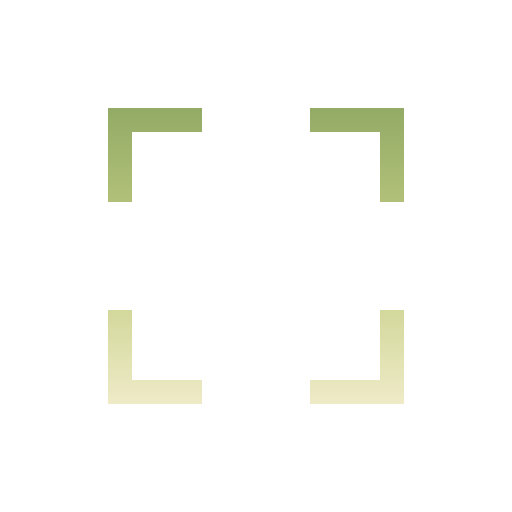

gradient logo — hero
logo 230
logo 96
logo 48
gradient icon — small sizes & tray
icon 96
48
32 tray
16
marks — transparent, for placing on any surface

white mark / dark

gradient mark / dark
gradient mark / light
ink mark / light